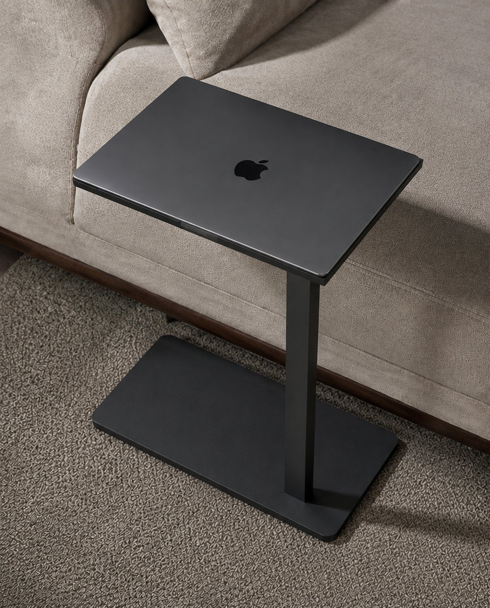

Flush fit
Black
Cut exact. The edge disappears.
Viento Satellite Surface

Cut for the MacBook. Engineered for workflow.
Viento is precision-engineered, minimal, flush-designed gear that integrates directly with a MacBook workflow. It’s an extension of the workspace, not just living room furniture.
See the fitHover to lock ↴
Every Surface is milled to match its MacBook — 13″, 14″, or 16″ — down to the millimetre, with a cratelet locking each corner in place. That extra millimetre of lift opens up more airflow underneath than a standard flat surface, for better heat dissipation.
Finishes
Flush fit
Cut exact. The edge disappears.

Flush fit
Cut exact, deep red-brown grain.

Customization
For those wanting more space, the Reveal customization opens up a few extra centimetres of open surface — letting the solid wood selection show through — while cratelets on the far edge still lock a closed MacBook firmly in place.
Each Viento Satellite Surface is cut, sanded and fitted by hand. Currently taking orders for late 2026.
hello@viento.co